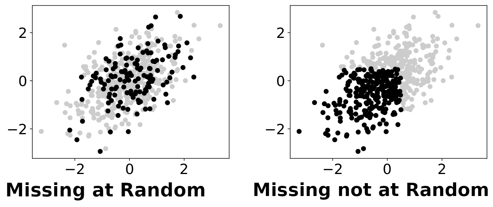
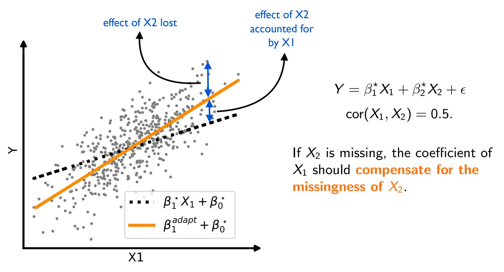
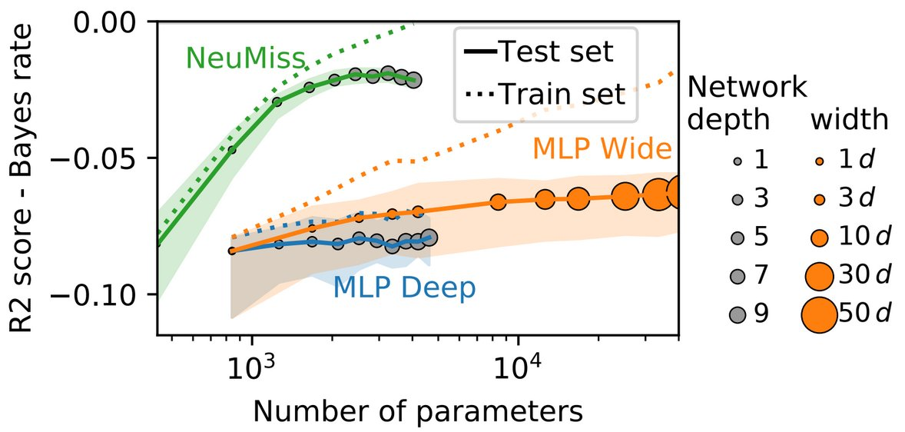
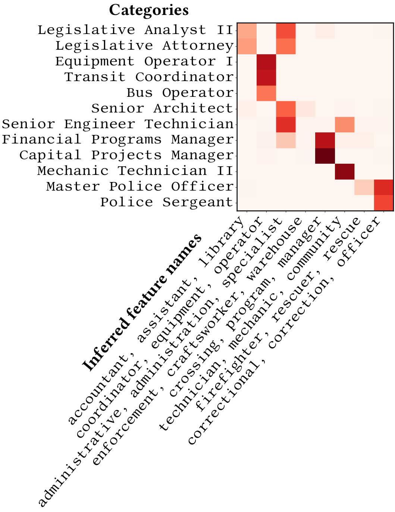
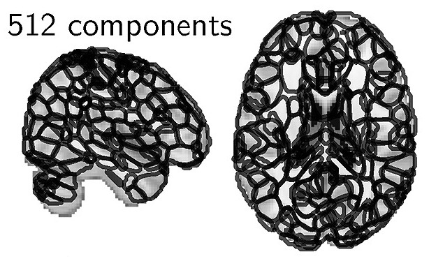
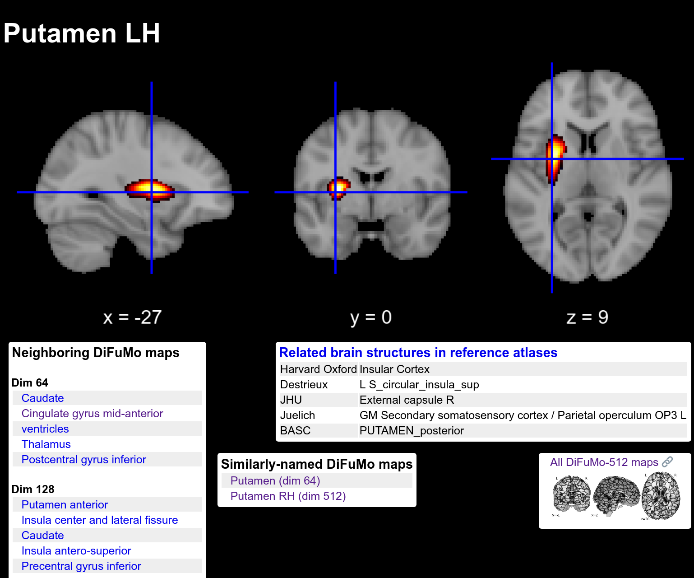

The year 2020 has undoubtedly been interesting: the covid19 pandemic stroke while I was on a work sabbatical in Montréal, at the MNI and the MILA, and it pushed further my interest in machine learning for health-care. My highlights this year revolve around basic and applied data-science for health.
Highlights
Mining electronic health records for covid-19
Hospital databases are rich and messy
Hospital databases In March, we teamed up with the hospital around Paris that were suffering from a severe overload due to a new pathology, covid-19. The challenge was to extract information from the huge databases of the hospital management system: What were the characteristic of the patients? How were the resources of the hospital evolving? In the treatments that were empirically attempted, which were most efficient?
The hospital databases are hugely promising, because they offer at almost no cost information on all the patients that go through the hospital. As we were dealing with a conglomerate of 39 hospitals, this information covers millions of patients each year: an excellent epidemiological coverage.
Challenging data science Our work was classic data science: we did a lot of data management, crafting SQL queries and munging pandas dataframes to create data tables for statistics and visualizations. We interacted strongly with the hospital management and the doctors to understand the information of interest. As we moved forward it became clear that behind each “simple” question, there were challenges of statistical validity. We did not want to produce a figure that was misleading. Typical challenges were:
- Information needed complicated transformations (such as following a patient hoping across hospitals to capture the patient status)
- Information was represented differently in the differently hospitals
- Incorrect inputs prevented aggregation (such as erroneous entry data after the exit date, or missing values)
- The database had biases compared to the ground truth (simple oxygen therapy acts more often unreported than complicated invasive ventilation)
- Censoring effects prevented the use of naive statistics (after 20 days of epidemic outburst most hospital stays are short simply because patients have entered the hospitals recently)
- A lot of information was present as unnormalized text, sometimes in long hand-written notes, full of acronyms and errors due to character recognition.
- The data were of course often a consequence of treatment policy (the choices of the medical staff in terms of patient handling and measures), and hence not directly interpretable in causal or interventional terms.
These challenges were very interesting to me, as they related directly to my research agenda of facilitating the processing of “dirty data” (more on that below).
Most of the work that we did was not oriented toward publication, but rather to address urgent needs of the hospitals. Some scholarly contributions did come out:
- Part of the extracted data are consolidated worldwide for medical studies (Brat et al, Nature Digital Medicine 2020).
- We used causal-inference methods to estimate the treatment effects of HCQ with and without Azithromycin (Sbidian et al, MedRxiv 2020,.
- The data are used in follow up medical studies (eg associating mortality and obesity Czernichow et al, Obesity 2020, )
Biomedical entity recognition A major AI difficulty in this work is recognizing biomedical entities, such as conditions or treatments, in the various texts. Coincidentally, we had been working on simplifying the state of the art pipelines for biomedical entity linking. While this research work was not used on the hospital data, because it was too bleeding edge, it led to an AAAI paper (Chen et al, AAAI 2021) on a state-of-the model for biomedical entity linking that is much more lightweight than current approaches.
Machine learning for dirty data
Machine learning methods that can robustly ingest non-curated data.
The Dirty Data project, that we undertook a few years ago, is really bearing its fruits.
Supervised learning with Missing values: beyond imputation
The classic view on processing data with missing values is to try and impute the missing values: replace them by probable values (or better, compute the distribution of the unobserved values given the observed ones). However, such approach needs a model of the missing-values mechanism; this is simple only when the values are missing at random. When have been studying the alternative view based on directly computing a predictive function to be applied data with missing values.

Missing-values mechanisms: black dots are fully-observed data points, while grey ones are partially observed. The left panel displays a missing-at-random situation, where missingness is independent of the underlying values. On the contrary, in a missing-not-at-random situation (right panel), whether values are observed or not depends on the underlying values (potentially unobserved).
Le Morvan et al, AIStats 2020 studied the seemingly-simple case of a linear generative mechanism and showed that, with missing values, the optimal predictor was a complex, piecewise linear, function of the observed data concatenated with the missing-values mask. This function can be implemented with a neural network with ReLu activation functions, fed with data where missing values are replaced by zeros and corresponding indicator features are added.
To go one step further, we noticed that the optimal predictor uses the correlation between features (eg on fully-observed data) to compensate for missing values.

Compensation effects: The optimal predictor uses the correlation between features to compensate when a value is missing.
Le Morvan et al, NeurIPS 2020 devise a neural-network architecture that efficiently captures these links across the features. Mathematically, it stems from seeking good functional forms to approximate the expression of the optimal predictor, that can be derived for various missing-values mechanisms. A non-trivial result is that a simple functional form can approximate the optimal predictor under very different mechanisms.

Better parameter efficiency
The resulting architecture needs much less parameters (depth or width) than a fully-connected multi-layer perceptron to predict well in the presence of missing values. This, in turns, leads to better performance on limited data size.
Machine-learning without normalizing entries
A challenge of data management is that the same information may be represented in different ways, typically with different strings denoting the same, or related entities. For instance, in the following table, the employee position title column contains such non-normalized information:
Sex Employee Position Title Years of experience Male Master Police Officer 23 Female Social Worker IV 17 Male Police Officer III 12 Female Police Aide 9 Male Electrician I 4 Male Bus Operator 15 Male Bus Operator 22 Female Social Worker III 13 Female Library Assistant I 3 Male Library Assistant I 5
Typos, or other morphological variants (such as varying abbreviations) often make things worse. We found many instances of such challenges in electronic health records.
In a data-science analysis, such data has categorical meanings, but a typical categorical data representation (as a one-hot encoder) breaks: there are too many categories, and in machine learning, the test set might come with new categories.
The standard practice is to curate the data: represent the information in a normalized way, without morphological variants, and separating the various bits of information (for instance the type of job from the rank). It typically requires a lot of human labor.

The original categories and their continuous representation on latent categorical features inferred from the data.
Cerda & Varoquaux, TKDE 2020 give two efficient approaches to encode such data for statistical analysis capturing string similarities. The most interpretable of these approaches represents the data by continuous encoding on latent categories inferred automatically from recurrent substrings.
This research is implemented in the dirty-cat Python library, which is making rapid progress.
Making sense of brain functional signals
Turning brain-imaging signal into insights
Brain imaging, and in particular functional brain imaging, is amazing, because it gives a window on brain function, whether it is to understand cognition, behavior, or pathologies. One challenge that I have been interested in, across the years, is how to give systematic sense to these signals, in a broader perspective than a given study.
NeuroQuery: brain mapping any neuroscience query
Systematically linking mental processes and disorders to brain structures is a very difficult task because of the huge diversity of behavior.
In Dockes et al, elife 2020 we used text mining on a large number of brain-imaging publications to predict where in the brain a given subject of study (in neuroscience, behavior, and related pathologies) would report findings.
With this model, we built a web application, NeuroQuery in which the user can type a neuroscience query, and get a brain map of where a study on the topic is like to report findings.
A high-resolution brain functional atlas
Regions to summarize the fMRI signal
Atlases of brain regions are convenient to summarize the information of brain images, turning them into information easy to analyse. We have long studied the specific case of functional brain atlases, extracting and validating them from brain imaging data. Dadi NeuroImage 2020 contributes a high-resolution brain functional atlas, DiFuMo. This atlas can be browsed or downloaded online.

The functional regions, at dimension 512.
The atlas comes with various resolutions, and all the structures that it segments have been given meaningful names. In the paper, we showed that using this atlas to extract functional signals led to better analysis for a large number of problems compare to the atlases commonly used. We thus recommend this atlas for instance to extract Image-Derived Phenotypes in population analysis, where the huge size of the data requires to work on summarize information.

The region capturing the right hemisphere putamen.